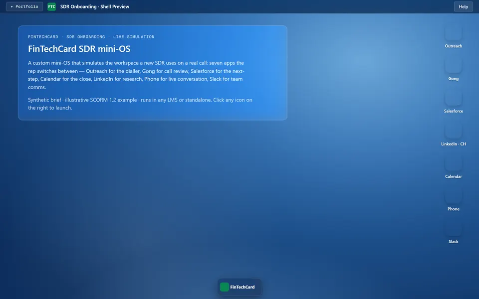
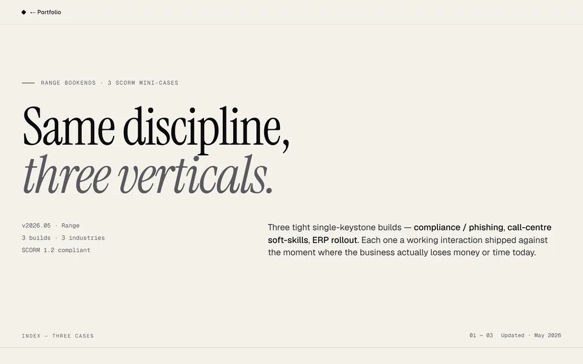
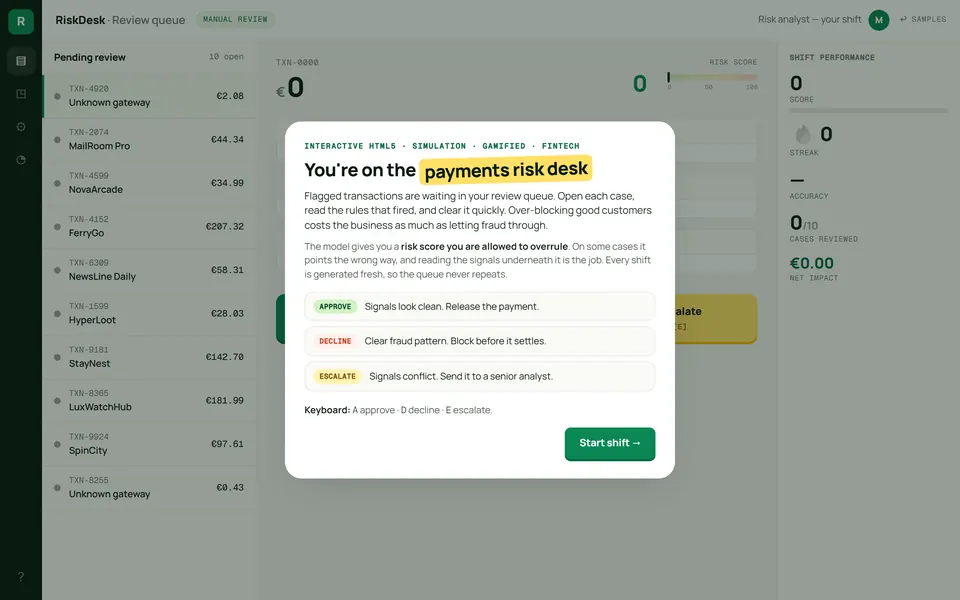
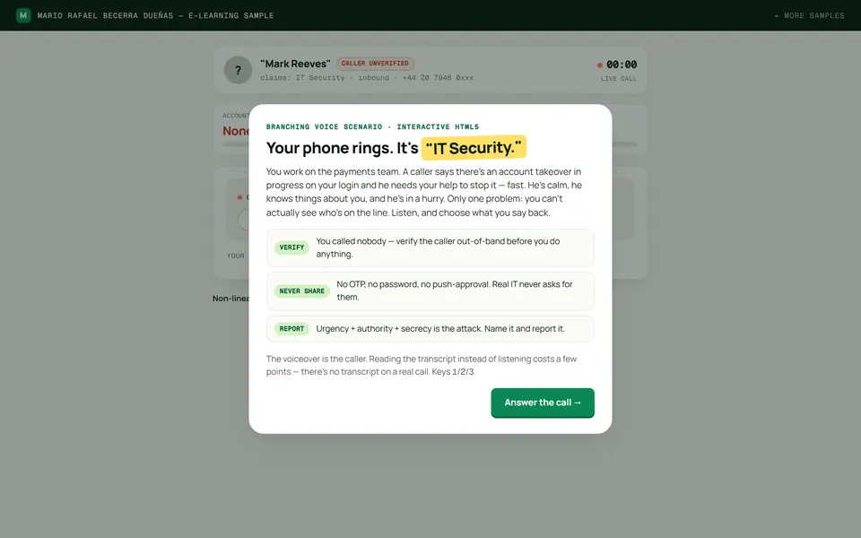
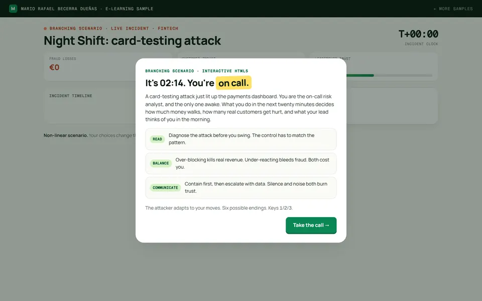
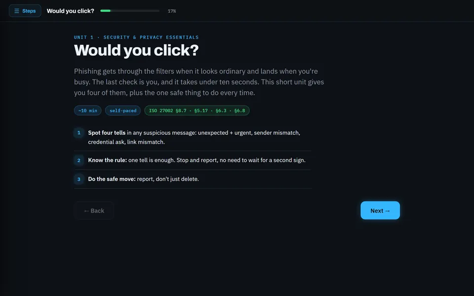
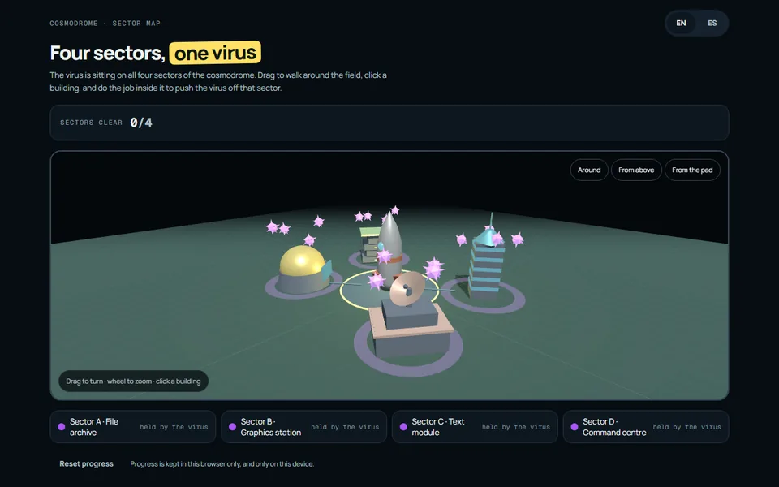
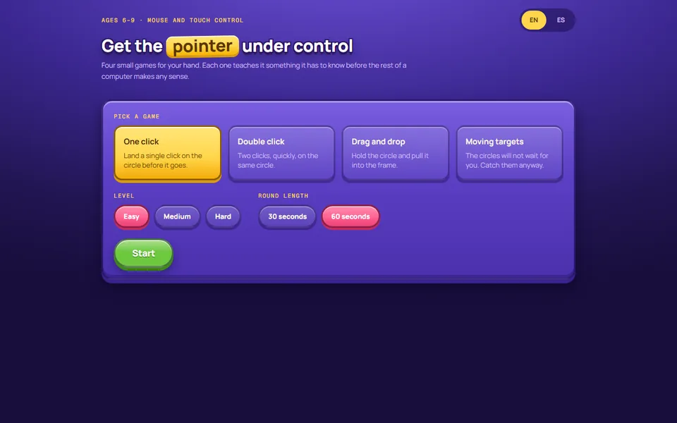
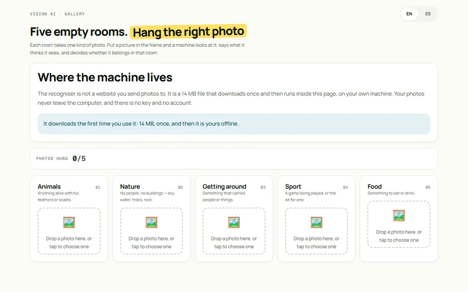

OS simulator
A new SDR's desk, running in the browser: Outreach, Gong, Salesforce, LinkedIn, Calendar, a dialler and Slack, each one a draggable window. Have a look around.
Open the desktop →

Security, de-escalation, procurement
Three SCORM 1.2 packages, one brief each: security onboarding for new hires, de-escalation for a call centre, an ERP procurement rollout. Each runs from the analysis brief to a package you can drop into an LMS.
See all three →

A branching fraud queue
A payments risk desk: flagged transactions, a risk score, the rules that fired, and Approve, Decline or Escalate. Every shift is generated fresh, and the model is wrong often enough that you have to read the signals yourself.
Open the queue →

The caller wants your MFA code
An attacker phones posing as IT Security. He is voiced, your replies branch the call, and his pressure adapts: urgency, authority, threat. Four endings.
Take the call →

2am on the risk desk
A card-testing attack is running and you are the only analyst on call. Chase the IPs and the bot rotates. Six endings across three live meters: fraud losses, customer impact, leadership trust.
Run the night →

Boring compliance, rebuilt
Security and privacy awareness, the usual 40-minute deck rebuilt as six self-contained micro-units on a retrieval chain. The case page is the design map; Unit 1 is playable in full, with a 2-minute film, a longread, nine checks and an inbox simulator.
▶ Play Unit 1 →

A spaceport held by a virus
Fly round the launch field in 3D and pick a building. Each one is held until the job inside it is done, and all four ask for something different: bin the virus files without binning ours, reconnect four wires, hold a purge down while it fights back, pull a lever and keep it there.
Take the field back →

Learning to use a mouse
Click, double-click, drag, chase. The four movements a six-year-old needs before any of the rest of a computer makes sense, each at three speeds, scored out of three stars. Dressed as a game because a drill dressed as a worksheet gets opened once.
Play a round →

What the machine sees in a photo
Hang a photo in a room and a machine says what it thinks it sees, then decides whether it belongs. The recogniser is MobileNet running inside the page, so there is no account to make and the photo never leaves the computer. It shows its guesses and the score it judged on, so a child can see why it said no.
Hang a photo →
Twenty of these live in one place: a Windows file manager, a Chrome tab strip, a Google Docs find-and-replace, a pixel-art canvas.
Open the catalogue →